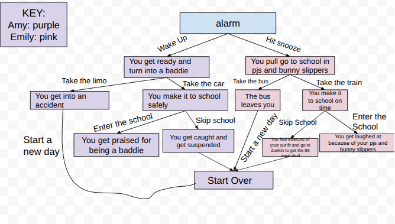

In my SEP10 class, we have been assigned to create our own adventure story with a partner. My partner and I choose the topic of "Going to School" which is our creative take in how we get to school in a fun creative way. The goal of this assignment was to practice how to collaborate and practice how to organize muliple files and link pages using Git commands such as git add,git commit, git push, git pull, etc.
In this project, my partner and I did a story of going to school, where the user controls what happens next. Our story starts with the alarm going off, amd depending on whether you wake up or hit snooze, the outcome changes. Basically every choice leads to a diffrent outcome, like making it to school ontime, or getting suspended these are one of many outcomes in our story. Every decision has its own page and connects with all outcomes. We created a diagram seen in the bottom of the page of all the choices to help us stay organized and create this story. We tried to make it dramatic, funny, and creative so it feels like a chaotic story.
One of the biggest challenges was coming up with a creative story that made sense. It was honestly harder than I thiught because it had to make sense with every following desicion and not sound random. We had to make sure everything flowed. Another major challenge was working with Git at the same time as my partner. Sometimes when we had to push our work, it wouldnt let us because one of us would be 2 commits ahead. This caused us conflict, and we had to figure out how to pull the current version before pushing. We were confused, but then used git status to help and pulling.
If I had more time, I would make the story longer, more detailed, and dramatic. I would also add HTML & CSS to add color, stlying and images. I would also move foward with what I've learned with the push and pull.
Link to the project